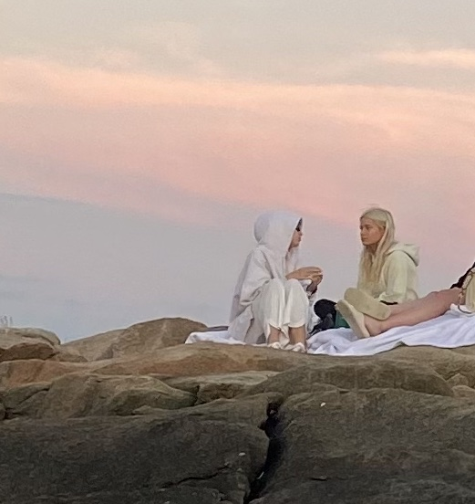

COLLECTED
quarters and cliches (after omakase)

Everything started with her voice. It had a honeyed timber; it matched her long, straight black hair down to her waist, her sharp eyes. Some people are made of parts; some people are their sum. She was whole. She was perfect, Californian. Everything about her made sense.
“Hold this for me?”
“What?” I had never seen her before. She was biting a hair tie between her teeth, and I knew I was staring. I knew I wanted to see her again.
“Hold this for me.” She was holding out her water bottle.
“Okay.” It was cold to the touch. She put her hair into a long, black, inky ponytail, then reached back out for her water bottle. Our fingers brushed at the handle; the metal weighed down our hands, heavy, for a moment, before mine were empty again.
I wondered to myself if my life could really fall like that—like cliches. I spent the rest of my afternoon bouldering by myself, bemused, though I promised myself to take a lap around before I left the climbing gym, but she must have left by then.
********
California was large, but campus was small. I saw her around campus on occasion, but never in close enough proximity to strike up anything past a head nod. It always worked like that, where you got at most one degree of separation from the people you didn’t want to see, but for the people you did, it took some degree of work. Not too much; I found from a friend of a friend of my roommate that she was an English and Mathematics double major. Christina Li. Christy Li, my roommate said. Rolls off the tongue.
Literature and Deception was a popular second quarter course for English majors; I signed up out of the pure fantasy that she might be there. When I walked in on the first day back in January and she lit up at me with crescent eyes and moved her backpack from the seat next to her, I knew the world was trying to drown me.
It was easy, after that. We’d read Diderot together in the library, I’d show her the latest sentence I’d underlined in my copy, she’d draw a thought bubble or a smiley face in the margin, or once, notably, a quick scribble of a heart. My shaky underline beneath “Life is but a series of misunderstandings” was afterwards forever burned into my mind. During class, she would sometimes make a point we’d discussed already on our own, and she’d give me a little twist of her lips before she said it to the class, articulate, brilliant, fond. We started to study together off-campus; I’d watch her dog-ear pages in her novels while I pretended to be engrossed in my stochastic models. She’d ask heads or tails, then flip a quarter. Decaf this time, she’d say, and take her orders that way. “Let’s pomodoro,” she’d say, but then we wouldn't finish anything. Our cafe study sessions would melt into dinners at the campus dining hall would melt into walking aimlessly around at night in the crisply chilled Californian evenings, talking about anything, everything, but mostly it was the anything, because she was so easy to talk to. She was sharp, she was bright, sunny, and I wanted to hear how she thought, how she viewed the world, every angle, every word that crossed her mind.
Our—descent, really—into girlfriends was a smooth and gradual one, like a frog in a pot. There was one weekend, nearing the end of winter quarter, where we lay on a picnic blanket in the stretch of grass by the humanities building, as the weather was warming. She lay on her stomach, writing a letter to one of her friends back home, and I lay on my back, staring at the blue sky.
I could feel my hair fanned out around my face, gleaming gold next to Christy’s inky black.
“What do you think—” I started, then stopped. I could hear the scribbling sounds of her pen pause in anticipation. Often I spoke before I finished my thoughts, and usually that was fine when I was with her, because there was no one I wanted more inside my unfiltered mind, but right then I was nervous. It was also nearing spring quarter; I had checked my schedule, and I didn’t have the room to fit in any of the classes she would be taking next quarter, not if I wanted to graduate on time.
I changed tracks. “Have you heard of queerplatonic relationships?”
I was staring at the clouds floating past in the sky, but I could hear the amusement in her voice. “Why, Evie?”
I shrugged, even though she probably could not see it. “I don’t know. I just wanted to hear your thoughts, I guess.”
She hummed, reflective. “No, I’ve not. But it’s funny, I think I can guess exactly what it means? Why, have you been thinking about it? What are your thoughts?”
I realized then that I had dug myself in a bit of a hole. I had no thoughts on queerplatonic relationships. I had not been thinking about them at all. I had been thinking about her, just her, she had been occupying all of my head space, and still was, and it was hard for me to think straight, of an answer that wasn’t just about her, about us, her, us, her, us, her, us.
There was a soft pause, as I tried to draft a thought. That was another thing I liked about her, all our pauses were soft.
“I guess…” I started, then slowed again. “I’ve been thinking about it a lot, lately. I was thinking about… or, like.”
Sometimes I would leave sentences unfinished because I knew she could finish them without words. And words could be clumsy, wrong, indelicate.
She rolled over and sat up, so she could look at me laying down. Her black hair waterfalled gently, and her eyes were sharp but the irises soft. She was biting on her lip.
“We’ve both said that we’d want to date our best friend,” she said. Then, “Romantically.”
I sat up, then, too. There was a pause, so I nodded.
The soft quiet continued. She looked at me, and I could feel that it was my turn to pick up the sentence.
“I'd consider you my best friend,” I said.
A smile broke across her face, bright, blinding. “We’ve only known each other for a few months,” she said, though her smile was bright.
I fidgeted with the edge of the blanket, wondering if it was still my turn to pick up the sentence, but she picked it back up again.
“Can I be your girlfriend?”
Then it was my turn to smile wide, wide, like the sun.
********
Spring quarter freshmen year was euphoric. Dating her was everything I had envisioned but better. We were each others' first girlfriends, first adult relationships. I was her first relationship ever, and she felt like my first relationship ever. We did everything together. We ate our meals together, we studied together, we went out together, we bouldered every weekend together. We learned what it was like to be with a girl. We willfully ignored the looming presence of a long-distance summer until the last possible minute, perhaps too last minute. Maybe that was why that summer was a cold plunge.
I had never done long distance before. I imagine it’s not too bad if you’re busy enough on your own, but that summer, back home in Texas, I had time. Too much time, so much time. I had an unpaid research position that I had started during spring quarter and managed to drag through summer, consisting of a weekly call that my mentor would often cancel, and then synthesizing game theory literature I would mostly skim through, at most a couple hours of reading and writing each week, and though I always planned to do more, I never really did. Weekends, I would take ten-hour shifts at a local cafe, a ten minute drive away from home. It was hard to meet up with my high school friends with my schedule. Sometimes, to pass the time, I would go to the neighborhood pool by myself and sit there with only my eyes above the waterline, and close my eyes, and listen to the kids giggle and scream.
I felt like I was back in high school, a kid again, stunted. It’s funny, how life goes in circles, in spirals, same, different. That summer in the large Texas house, the silence rang loud. It wasn’t just the time, the slow seconds of summer, but the space. A large house, a large country.
Christy, that summer, was neither in Texas nor did she have time. She was juggling two internships, paid cryptography research at a blockchain startup based in the Bay and an unpaid publishing one based remotely in New York, and then also a mathematics directed reading program with one of her professors.
Her life came to me in snippets.
“They’ve been putting me on Solidity. Very low-level, object-oriented.”
Dear Evelyn, How’s it down there in San Antonio? Hope you’re well. I went to Pride last weekend! It was my first time, it was so fun. I wish you’d been there. Did you go to yours?
they put girl in red in the crypto office playlist isnt that crazy
“I’ve just been making social media posts to promote authors, but it’s nice to get the connections. I’m actually interviewing a literary agent tomorrow morning.”
ahh look at this stray cat outside my office it says imy
omg evie gimme a sec i needa send an email rq
Have you been writing much lately? I keep wanting to finish that story I started last quarter, do you remember, the one about water as a form, but it’s hard to find the time.
“Wait, sorry, Evie, my manager’s calling me. Talk to you later.”
We should stream a movie together this weekend. In the Mood for Love? Or the new Pixar movie is coming out, right? I feel like I could find that online somewhere.
i have to go grind out this code before midnight
but gl w ur game theory paper u should send me ur draft :D
“Sorry Evelyn my mom’s calling me for dinner, I have to go. Are you free next Saturday night? Do you wanna finish the movie then?”
sorry it’s been a rly hectic few days
Oh! Wait, really good news. I might visit Texas at the end of July. There’s a literary conference the English department might sponsor for me, in Austin.
********
Most of that summer felt like pool water, aimless, trapped, still, until everything came to head at the close of July. I told my parents I was visiting a college friend in Austin, an hour and a half out. Not a lie, not in the logical sense.
I drove up on a Wednesday which I remember noting because there was 70’s music playing on the pop radio station, which only happened on Wednesdays, and feeling grateful that I didn’t have a proper internship so I was able to just up and leave on a random Wednesday afternoon.
I waited at the hotel, tracking Christy’s dot on my phone, studiously. Three miles out, two. One.
the uber driver keeps trying to talk to me in japanese im honestly kinda impressed he hasn’t given up after thirty minutes
also almost there
The moment I saw her walk into the lobby, I felt a wave of calm wash over me, right, true.
“I’ve missed you so much,” I said, face buried into her inky black hair, arms tight around her body. “So much.”
“I’ve missed you too, Eves. I’m so excited, we have so much to catch up on, oh god. It’s been so long.”
It had been so long. Christy was so full of life, so bright, so unreal. I saw that the snippets I had been getting this summer had only been that—snippets. She had been truly blossoming. She was interviewing poet laureates, she was pushing new code into the startup repositories, she was networking with literary magazine editors, she was riding in her coworker’s self-driving Tesla, she was hiking on the weekends, she was presenting her abstract algebra research, she was talking qubits with the cofounder, she was helping organize the publishing company’s pride events, she was making new friends, close friends. She was fresh, glowing.
Even just at the conference, I could see a certain newness in her. The way she held herself, the stack of business cards she collected. Her openness to share. She was becoming the sort of person who had a friend of a friend, and indeed, it was a friend of a friend of hers who snuck us into a bar that Friday night, on Sixth Street.
His name was Thomas. He vaguely reminded me of my older brother with his fair blonde hair and tall lanky stature, and was also attending the conference, as a budding poet. He and Christy had apparently had similarly frustrating experiences with this one literary magazine, from what I could tell from the conversation. We sat up at the actual bar, waiting for the bartender to notice us. There was a rainbow flag behind the stacks of liquor, strewn and careless among the hodgepodge of risqué posters on the wall. As if magnetic, my eyes kept straying toward it.
“We should do pride together next year,” Christy said, noticing. “Thomas, have you been?”
“No yeah, of course. Austin Pride, it’s pretty crazy.”
I recalibrated my mental image of Thomas as someone who would have attended pride.
“My girlfriend’s been bringing me, for the past three years,” he continued. I recalibrated my mental image, again.
“Do your parents know?” I asked, suddenly. Once the words left my mouth I could hear their dissonance with the conversation.
“What, that I’ve got a girlfriend?” Thomas said, laughing. It was kind of him, to smooth it over.
“It is easier, isn’t it?” Christy said. “Hey! Yeah, thanks.”
She had flagged down the bartender, finally, and pointed to some drink on the wall. I nodded my head towards her, same one. Thomas gestured, same.
“Oh, sure. Though I don’t think my parents would care very much if she were a boy. I think my girlfriend would care though,” Thomas said, biting down a smile. “Your parents care?”
Christy’s eyes slid toward me. We had talked about it before, but we hadn’t talked about it before. We had talked about hypotheticals, potentials, scenarios. Had she told her parents? Would she tell her parents?
“In theory, no. In practice, probably,” Christy said, fingers fidgeting with the edge of a napkin. “To an extent. But not too much. Or like. It’s different, I feel like, with Asian families.”
“Right, yeah,” Thomas said. “They care about a lot of things, with dating, in general.”
Christy laughed; I twisted my lips a bit. Thomas added, “My girlfriend’s Korean,” before looking over at me. “How about you, do your parents know?”
“No-o,” I said, feeling my lips purse around the o. “Probably the opposite though, I’d hope. They certainly care in theory. But in practice, it’s always hard to tell, right? I’d like to think not.”
Christy reached over to squeeze my leg under counter.
“Mm. You think your parents would care that you’re dating someone white, then?” Thomas said, light, to Christy.
I wondered if Thomas had pre-gamed the bar. Christy tilted her head. “No. White and Asian, it’s the most common pairing, isn’t it? Back in SF, that’s like every other couple you see.”
“Yeah. No, yeah, it is,” Thomas said, a joke playing across his face. “In some places. For sure.”
“Do your girlfriend’s parents care?” I asked.
“Yeah, but in the good way,” he said, self-effacing, apologetic. “Sometimes that happens, also, with Asian families. You know.”
He gave an airy wave of his hands, and Christy’s hand tightened on my thigh.
“Here,” said the bartender, putting three glasses in front of us. “You want to close it out?”
Christy let go of my leg. “Yes, thanks.”
********
The drive home from the conference was especially hollow, empty. I could almost visualize the ghost of Christy next to me, in the passenger seat, bright, sunny, until she would flicker out, leaving only the sunlight from the window. Maybe that was why. I really don’t know. Maybe I wanted Christy to seem more real, or maybe it was the conversation in that dimly lit bar on Sixth replaying in my mind on the drive home. Or maybe it was the space and time. Maybe it was a conversation we’d had even before we started dating, when I’d asked Christy whether she believed in unconditional love, and she said that the closest thing to unconditional love must exist in the love a parent has for their child.
I waited exactly a week from the end of the conference, enough time so that it wouldn’t be called into question, to tell my parents that I had something to tell them.
It went fine, at first. There weren’t many weeks of summer left. My parents knew that, as did I. My mom’s voice flared a bit, but if you didn’t feed the fires, they fizzled out, eventually, usually. The house was large, and they reacted as best as they could have. Upset, then let their knowledge fade back into ignorance.
I hadn’t told them about Christy, specifically, because concepts were easier to both digest and ignore than real life people. Toes in the water. Half-truths still held truth.
The last vestiges of summer passed like the first, then, maybe a bit emptier, because they were a bit more hopeful.
********
The start of sophomore year snuck up on me. The first week back, before classes started, Christy and I spent almost every moment of every day together. It was glorious, and new in a way. I had missed her so much. I came out to my parents, I told her over dinner, and her smile was hopeful, open. Weather was hot, but we walked hours together as she scrolled through her camera roll with me. Sylly week, I skipped my classes to sit in on hers. Complex Manifolds. British Novels in the 19th Century. Elliptic Curves. Introduction to Poetry.
The second week of classes, my world fell apart. I don’t know how my mom found out. It was unnatural, hearing the word Christy cross her lips. Like a stone in the water, I was dropped. A short call, where I couldn’t say anything on the line, and then I lay on my bed, feeling like I was back in that neighborhood pool, heavy, lifted by the water, the oppressive sun beating against my eyelids.
I think I laid there for hours, mind foggy, mouth dusty. Family is a light word, I thought. It rolled off the tongue easy, like a snowball, too easy, fast, thrown around. My family—or was it still mine—my family, they could throw a quarter of ourselves—themselves—away, quick, easy.
can u call, I texted Christy. It felt like the ceiling was right on me. Dinner came and went, and I checked my phone, but there was nothing there.
She called, the following day.
“Hey, everything okay?” she said. “Sorry, I was working on a problem set yesterday with friends. What’s up?”
I don’t remember what happened on that call, or if I had said anything. Maybe I was dry wretching, or maybe I’d hung up, or maybe I’d gotten something out.
After that, fall quarter sophomore year passed by in a haze. I only remembered Christy, Christy, Christy. Her black hair, her honeyed voice. I continued skipping my classes to sit in on hers. I would skip meals, when Christy was eating with other people. I shut myself inside. I would fall asleep in Christy’s room, even when she wasn’t there. I wrote her long love letters instead of going to meetings for group projects.
“Evie, I’m worried about you,” Christy said, often. She probably started saying it to me more often than how are you, or how was your day. I didn’t really have days to talk about, in any case. Sometimes she would drag me to spend time with her friends, though sometimes it made it worse. I could tell they were humoring Christy.
Once, I mentioned that Christy loved Murakami, and one of her friends gave me a weird look. Later, she told me that she’d actually never read Murakami, though I could have sworn she loved him. I had written her a five-page bit on the parallels between Kafka on the Shore and Camus’s Stranger, a letter she had studiously underlined, before laughing over it with me in bed. Another time, one of her friends started asking me about my exes, unprompted.
One afternoon, as I was lying in Christy’s bed alone, seeing the natural outcomes of taking out student loans playing across the ceiling, she walked in, saw me, and sat at the edge of the bed.
“Evie,” she said, her weight sinking me down toward her, like a center of gravity. She brushed aside a few strands of my hair.
“Hmm?”
She stroked my hair, softly, gently. I closed my eyes and felt them start to burn.
“I don’t know how to say this,” she said. I could hear her next words, I’m worried about you.
That wasn’t what she said. “I think you should start spending more time alone.”
I opened my eyes, opened my mouth. Closed it, then opened it again. “I have been. Christy.”
It was embarrassing. I heard myself and I wanted to shy away from myself.
“I know,” Christy said softly. “But I think you should start going to your classes.”
“More time alone,” I said. “As in not with you.”
There was a pause, soft. “I think… I care about you so much, Evelyn. I wish you would too. I don’t want you to lose sight of yourself.”
Had I? I had had a whole summer to keep sight of myself, just myself.
What do you mean, I wanted to say. I didn’t want to hear her answer. “Okay. Okay. I’ll start going my classes.”
It was rough, and slow, and I had to let go of good and think about better, for my classes. The economics sequence was certainly quite sequenced, and I don’t think skipping the first month did me any favors. I didn’t tell Christy, but I started to pick up smoking.
There are worse things than cigarettes. Uglier things, at least. Sometimes, I’d slip out of an economics lecture where I didn’t understand a single expression across the immense wall of chalkboards, where I didn’t know a single person in my class, and go smoke. A minute or two, then throw it out. It wasn’t for the nicotine, I told myself, but for the regularity. The physicality. The habit of pulling out a flimsy papery cigarette from a sharply designed, clean red and white box, of lighting it, of breathing it in.
The idea of it.
They helped. I didn’t do well on my first round of midterms, but I didn’t fail out of any of my classes. Christy helped me in my econometrics class, slowly walking me through the statistics proofs until 2 am the night before the exam, exhausted. I slowly began to tire of being tired all the time. I still slept in her bed, but only at nights. I started to wake up before noon. I willfully didn’t think about winter break. I started to understand the newer lectures. I learned the names of a few classmates. Things started to keel even.
Christy and I started going on dates again. An art exhibit one weekend, a new ice cream place another. Dinners. Studying. I cut down on smoking, keeping it strictly during lectures. We started hanging out outside of her room again.
“Evie?” Christy said, one time when we were in the library together.
“Hm?”
“Do you know…” she trailed off, slightly. “Hm.”
I slanted down the screen of my laptop, and turned to face her.
She spun the pen in her hand. “Where do you want to go for dinner tomorrow?”
“Omakase?” I said. Christy loved omakase; it was an event dinner of ours. There wasn’t any event tomorrow but sometimes it was nice, like flowers without any reason.
Her lips twisted a bit, maybe with a hint of irony. “Have you read the New Yorker story before? Weike Wang?”
I shook my head, making a mental note, adding it to an imaginary to read for Christy list. “Omakase? What’s it about?”
Christy’s eyes searched mine, a tremor of her brown irises. “I know that you’d say your favorite food is either Thai drunken noodles or that one limoncello pasta you had once.”
I could feel a shadow in our conversation coming on. The way Christy kept skimming and skirting.
“Or hot honey pizza from the place by campus,” I said.
“Evie, do you know…” Christy said again, then stopped. “What if we go to the pizza place tomorrow instead?”
“Why?” I asked. “Let’s get omakase. I wanted to go to dinner for you tomorrow.”
I could feel Christy choosing her words like a dragonfly gliding across the water, light, erratic.
“Yes. Although,” she said, “I really like the hot honey pizza.”
I couldn’t help the twitch of my eyebrows. “Okay. We can go to the pizza spot.”
“Okay.”
“Okay.”
It was a cozy spot, with woodsy walls and sprawling pothos plants and careless cursive fonts, popular with students and club catering, though Christy and I rarely frequented here together. Forty-two, the speaker buzzed, and I went to go grab our pizzas, two large flats, one classic hot honey pepperoni, and the other margherita.
“Here,” I said, setting them down.
Christy opened the boxes, grabbing the hot honey to drizzle over both, before she paused.
“Evelyn,” she said, the end of her voice rising, as if a question.
“Hmm?” I grabbed a slice of the margherita onto my plate.
“I’m allergic to basil, Evie.”
I paused, almost comically, before the pizza entered my mouth. “Oh god, I’m so sorry, I don’t know how that slipped my mind.”
Christy smiled faintly. “It’s okay, it’s an uncommon one.”
“No, I know, but this happened last time we were here together.”
“It’s okay, you can take the margherita, I’ll take the pepperoni, yeah?” She drizzled the hot honey on the margherita first, slow, slow and even, then the pepperoni.
“I’m so sorry,” I said again. She looked up at me, lips twisted, almost amused. “Let’s do omakase this weekend. No basil, I promise.”
She set a pizza slice on her plate. “Omakase?”
“Omakase,” I repeated.
It was beginning to sound less and less real, and more like just sounds. Round, warm, sharp, crease. O-ma-ka-se.
“You know, Evelyn,” she said, “I do like omakase. Omakase is really good. And I genuinely love it when we get omakase. But if—I guess—it’s—or, like.”
She took a bite. I waited patiently. She started again. “I guess if someone were to ask me my favorite foods, I wouldn’t ever think to say omakase.”
“We can get something else,” I said. “Anything else. I thought you loved omakase.”
“I do like omakase,” Christy said slowly. “We can get omakase this weekend, if you want.”
“I want what you want,” I said. Then, again, “I thought you loved omakase.”
“Sure, let’s.”
********
That night, as we walked home, I felt a stone in my stomach the entire time, emanating dread. I wanted to slip away and take a smoke, hear the solid click of a lighter and the practiced movement of holding a cigarette, loose, between two fingers, but I also felt like something even worse would happen if I left Christy alone for a single moment. I’m not sure what something worse would have been.
When we laid in bed that night, Christy stared at the ceiling for some time, before she started. I don’t remember how, exactly, she started, or how she went on, or how she ended. I remember it in snippets.
I love you, Evie, I promise you.
I’ve thought for some time now that I’m not—that this isn’t healthy for—us. You’ve been—or like, I think you’re—I think we’ve lost ourselves as our own selves.
No, come here. No. I love you so much. Evelyn. Stay here.
Evie—I’m not—all your exes have been—they’ve all had black hair, Evie.
I’ll help you figure out something for winter break.
No, this wasn’t about the omakase. No.
Yes, stay, stay.
You know I love you.
Evelyn.
That was the last night I spent in Christy’s bed.
********
Like most things people say, it was easy to trade truths for half-truths, and half-truths for quarter-truths.
For instance, “this wasn’t about the omakase” was a half-truth, maybe only a quarter-truth. “This” is slippery, as all pronouns are. The day after, I read Omakase by Weike Wang obsessively, once, twice, thrice, four times. Maybe it was a half-truth that could be made whole with another half-truth: “they’ve all had black hair.” Half-truths are only that. Did two halves make a whole? Or did they cancel out?
Winter break, “I’ll help you figure something out.” Halves, quarters. After that, the numbers weren’t so neat. Twelve point five. Six point two five. Take that by a hundred, and you were back to quarters squared. Winter break. She’d known, she’d recognized that, and she hadn’t cared.
“You know I love you.” You can trade a quarter in for two dimes and a nickel, but what use is a nickel? You may as well take five pennies and throw them all out.
“Evelyn.” That one was the worst. Names were promises. Names were you.
********
I gave up smoking, soon after. The cigarettes had been there to hold me over until I could see Christy next. What was the point, now?
I started trying on and off habits like clothes. Healthy habits, too. Constructive, on the right person. I took them as punishments, as proof to myself. I ran three miles at 5 am for four days. I finished catching up on every advanced game theory lecture of the semester in one week. I threw out all my lighters. I started Crime and Punishment, then stopped after a day in which I’d skimmed through three hundred pages. I never slept, not well. I didn’t need the caffeine to stay awake, but some days I’d make coffee to hold something in my hands, to still the shakiness. During lectures, I’d slip out, hold a cigarette in my other hand, lightly, just that, and feel invincible.
I called my brother.
He never liked our parents, but he never liked me much either. After he had moved out for work, we stopped talking. I hadn’t seen him a single time since my junior year of high school, and no one seemed to care much. I hadn’t known how the conversation would go. It went fine. He laughed a lot. He found most things funny now, he told me. I was glad in any case, if funny meant I had a place to stay over winter break.
********
Winter and spring quarters sophomore year were some of the lowest points of my life, yet academically I excelled. There wasn’t much else to put my energy towards, besides working up the courage to call my parents. I did, finally, a month before summer break. They were distant, until I started to say things I didn’t believe. Half-truths, quarter-truths. You can always sum them into a whole, if you need a place to stay.
The last week before summer break, I was in a state of mind. That was my only excuse, really, that when I spotted her long black hair through the windows of the library, I ran down two flights of stairs to chase after her. When I came out of the building and I hadn’t lost her, I knew the world was insistent on drowning me.
And worse, I caught up right as she dropped her hair tie. I knew, then, that life really did fall in cliches.
“Christy?” I was out of breath, but I would have been anyway. “Christy, you dropped your hair tie.”
“Christy?” In a tone that indicated she had never heard of the name before, a tone that jarred me, my vision blanking. Then, after a moment, “thanks!”
It was not until I registered the back of the girl’s silhouette, long in the distance, before I realized—I hadn’t known her at all.